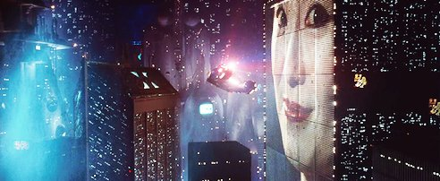

Blade Runner, Still (Police Spinner Flying Past Skyscrapers)
Ridley Scott · 1982 · Film, colour (frame)
In copyright. Look and learn: shown for study, not for download.
The spinner was designed by the concept artist Syd Mead, and the customiser Gene Winfield turned his drawings into 25 vehicles, at least two of which could be driven. The city was built from matte paintings and models, with Mark Stetson as chief model maker. In some shots the set was lit, filmed, the film rewound and exposed again under different lighting, as many as 16 times. The effects supervisor David Dryer lined up miniature building shots using stills from Metropolis. This frame was taken from the Final Cut version.